← Projects / Florida Rocket Lab / In progress
Supersonic Active Control Testing Vehicle
This is what I am working on now. Dizzy is a Mach 1.5, 20,000 ft subscale vehicle that flies the full-scale rocket's nose cone, avionics, recovery, and canards on a commercial solid motor, so the canard controller meets the transonic transition on a cheap airframe instead of on the full-scale one.
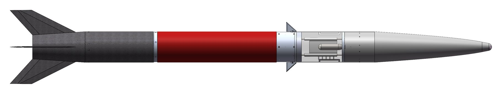
Status · active
- Stage
- Concept design review → PDR 30 Nov 2026
- Target launch
- Late Feb 2027, North Texas
- Organization
- Florida Rocket Lab, University of Florida
- Role
- Flight Vehicles Engineer
Vehicle (OpenRocket)
- Length
- 95.6 in
- Max diameter
- 6.17 in
- Mass with motor
- 68.3 lb
- Mass without motor
- 38.2 lb
- Motor
- AMW N4000BB, 98 mm
- Static margin
- 2.21 cal at M = 0.3
Predicted flight
- Apogee
- 20,465 ft
- Max velocity
- 466 m/s (M 1.45)
- Max acceleration
- 17.7 g
- Burn time
- 4.1 s
- Liftoff T/W
- 18 : 1
Why fly it small first
The full-scale vehicle, Vertigo, steers with active canards. Canard authority changes character as a vehicle goes transonic, so a control scheme that behaves on paper still has to be flown. Dizzy is the cheapest way to put the controller in front of that transition before it flies on the full-scale airframe.
At concept design review the approach got simpler. Everything forward of the propellant tank is carried over from Vertigo exactly as it is: nose cone, recovery bay, avionics, and the canard section. The fin can carries over too. Only the liquid propulsion system comes out, replaced by a 98 mm commercial solid motor inside a short body tube. Dizzy is not a stand-in for the full-scale hardware; it is the full-scale hardware on a different motor.
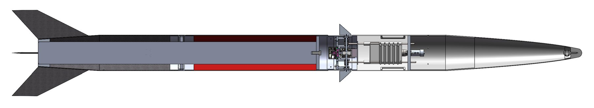
| What Dizzy has to do | Data acquired |
|---|---|
| Fly a 6 in airframe with the real fins and canards | Whole-vehicle drag coefficient; lift coefficients of the fins and canards |
| Fly a roll program on the canards and reach Mach 1.5 | Normal force coefficients of the fins and canards, roll damping coefficients, stability margin, vibration, roll reversal |
| Fly the full Vertigo forward section | Flight test of the reefed recovery system and the avionics; a full rehearsal of launch operations |
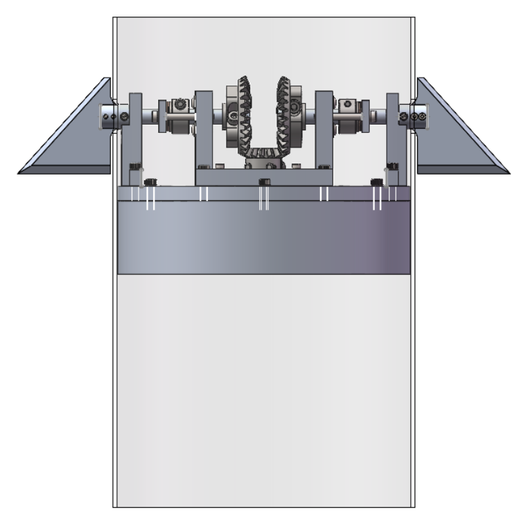
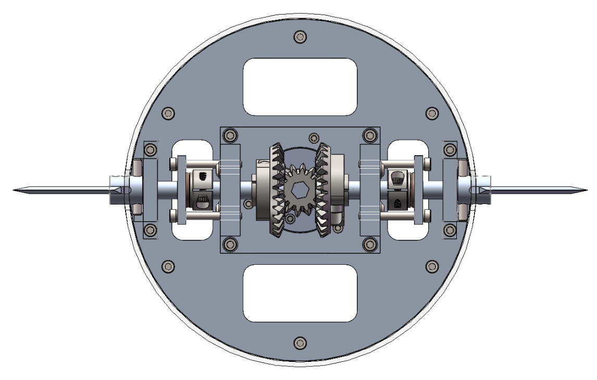
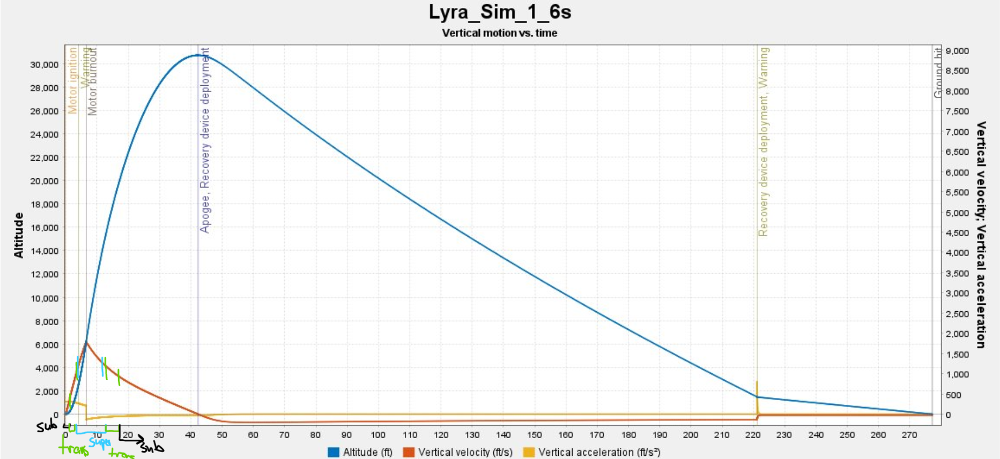
Sizing and sourcing the motor
A lower bound on total impulse comes from the momentum the vehicle needs at burnout plus the gravity loss during the burn, with drag left out:
Itotal ≥ mbovbo + m̄ g tb≈ (20.3 kg)(515 m/s) + (23 kg)(9.81 m/s²)(4 s)≈ 11,360 N·s
That already lands in the N class (10,240 to 20,480 N·s) before drag is counted. The OpenRocket model with drag agrees: on an N4000 it reaches 20,465 ft and Mach 1.45.
Finding one was the harder problem. Large solid motors are in short supply right now: one major manufacturer is not selling, and the other quoted a 44-week lead time. We went with Animal Motor Works, a smaller Tripoli and NAR certified manufacturer, and will fly their N4000BB (“Blue Baboon” propellant) in a 98 mm case loaned by AMW. The motor needs a Level 3 certification that nobody on the team holds yet, so an outside L3 mentor is supporting the purchase and will be on site when the motor is assembled.
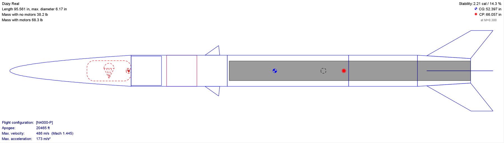
Structure
The thrust structure is kept as small as it can be: one bulkhead and two centering rings. Every part that is unique to Dizzy exists either to carry thrust into the airframe or to adapt existing Vertigo hardware to the motor section, without gluing anything to Vertigo parts that have to fly again.
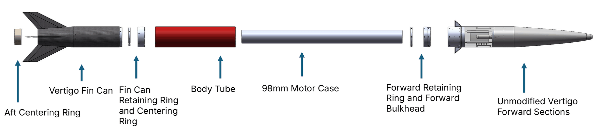
| Component | Purpose |
|---|---|
| Forward bulkhead | Primary thrust member |
| Center retention bolt | Holds the motor in before launch and during recovery |
| Forward retaining ring | Couples the full Vertigo forward sections to the aft aerostructure |
| Fin can retaining ring | Couples the fin can to the body tube |
| Fin can centering ring | Centers the motor without being glued to any Vertigo hardware |
| Rear centering ring | Centers the motor at the nozzle exit plane |
| Body tube | Aerostructure around the motor |
Forward end: where the thrust goes in
The forward bulkhead is the primary thrust member. It screws into the forward retaining ring and the body tube, and a single bolt through its center threads into the motor's forward closure, which holds the motor in place on the pad and under parachute. The bolt size is set by the motor case.
The forward retaining ring connects the canard section's coupler to the bulkhead. It uses screws instead of epoxy because it sits against the motor's forward closure, and every metal part touching that closure acts as a heat sink. Ten smaller screws instead of a few large ones spread the bearing load over more of the fiberglass body tube.
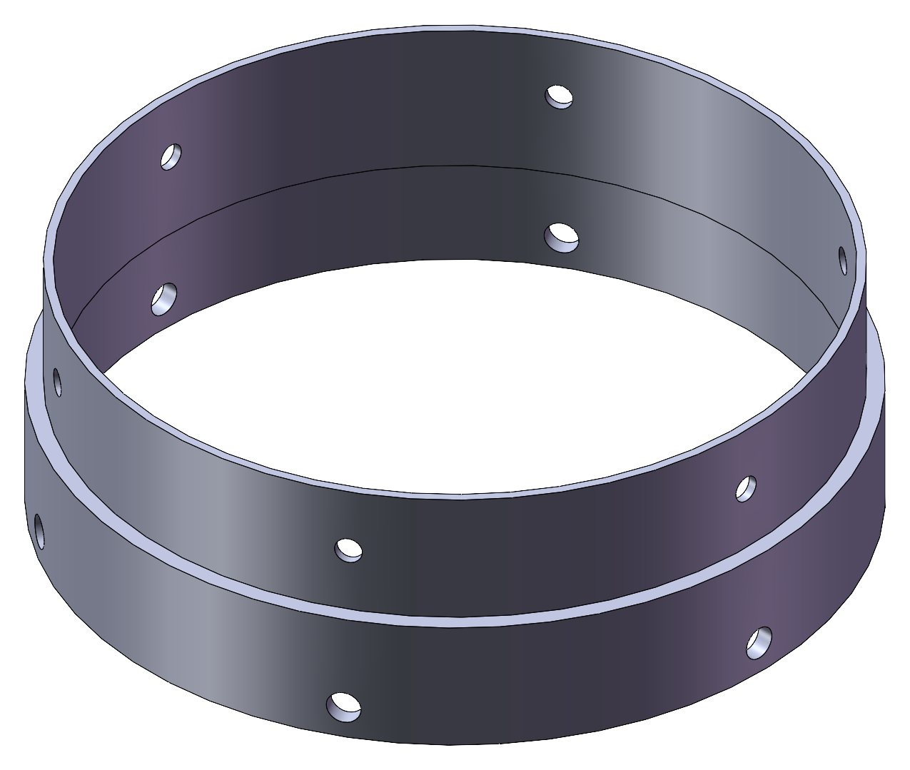
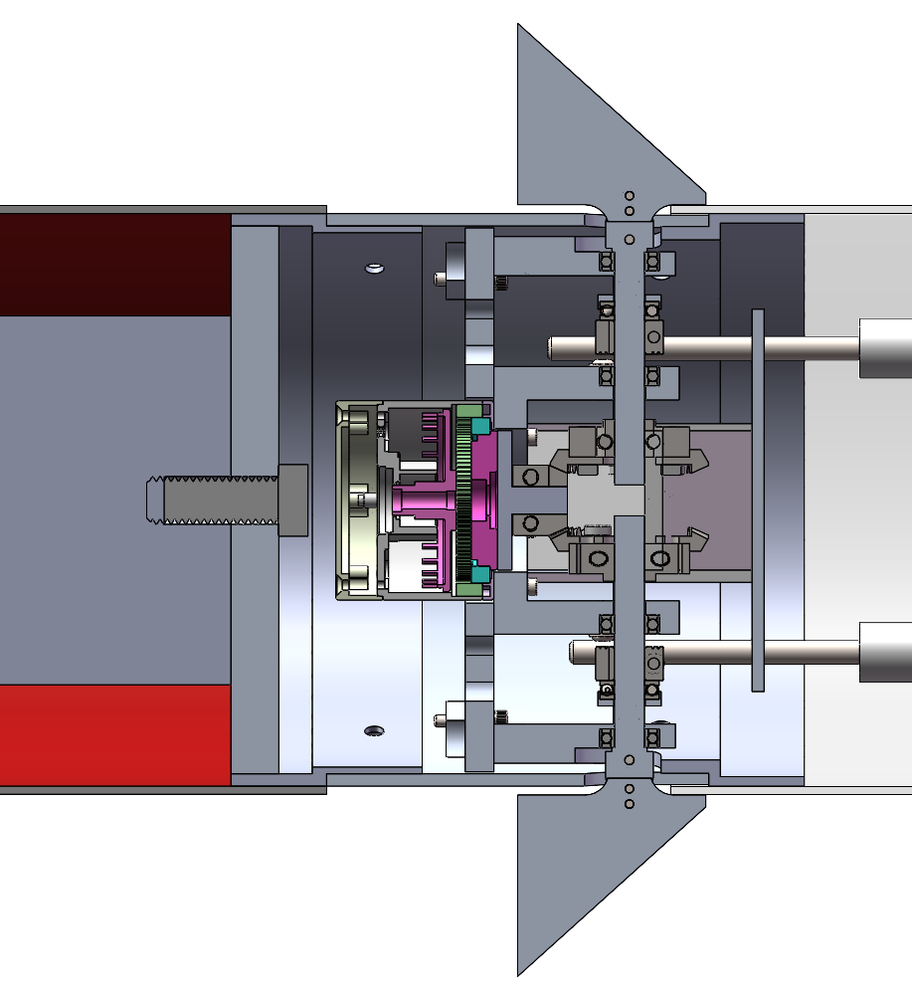
Aft end: adapting the fin can
The fin can retaining ring is an adapter between Vertigo's existing fin can coupler and the body tube. It is screwed into the fin can coupler and the fin can centering ring at its aft end and epoxied to the body tube at its forward end. The centering ring is a close fit around the motor but not attached to it. At the nozzle, a rear centering ring keeps the motor centered and damps vibration. The aft end of the case gets hot, so that ring has to be thermally insulating; it will be turned from wood.
The body tube is reused from the team's previous vehicle, Mirage. Because the bulkhead takes the thrust at the forward end, the tube is loaded mostly in tension, from fin can drag. Drilling the radial screw holes cleanly in fiberglass needs its own tooling, which is being set up as a new-member project.
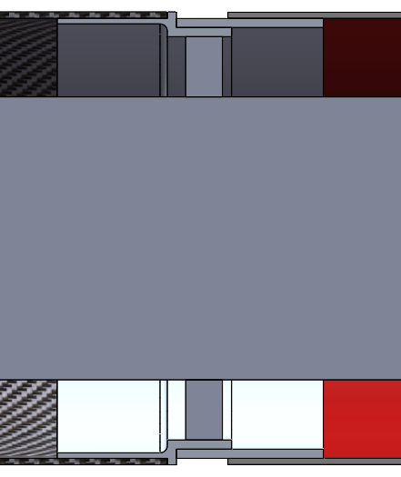
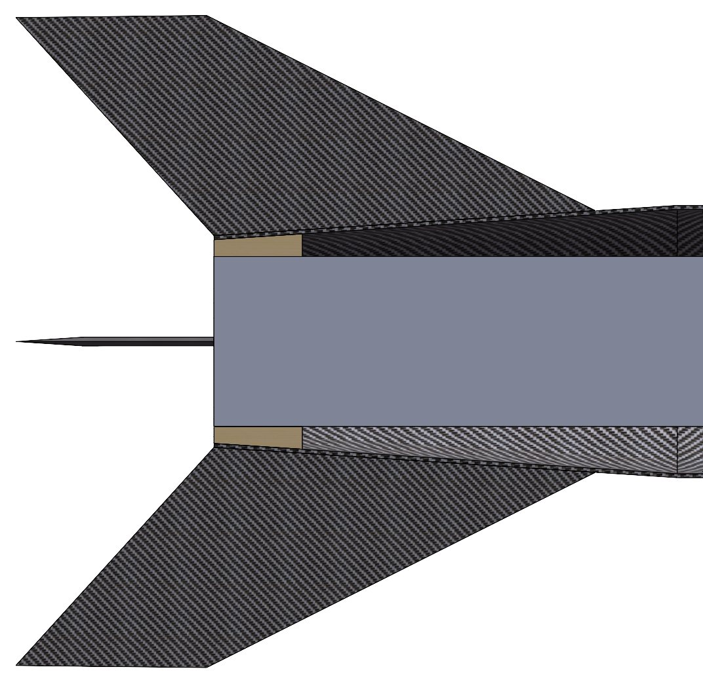
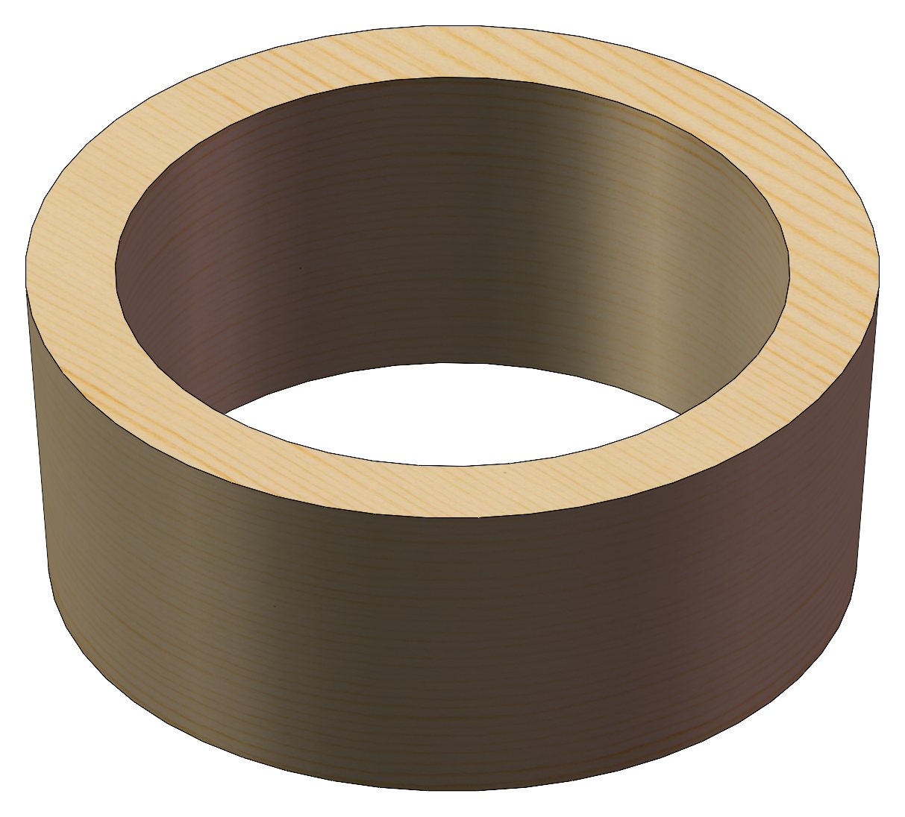
Integration and flight
Dizzy integrates in three sections: the full aft end with its centering rings, the motor with its bulkhead and retaining ring, and the full forward section. The motor slides into the aft end and the retaining ring screws into the fiberglass; the forward section then attaches to the retaining ring. The launch campaign doubles as a rehearsal of Vertigo's operations, from subsystem pre-assembly and travel through checkouts, countdown, and recovery. The igniter is an e-match coated in pyrogen on a 3 ft dowel, run from a control box we are building.
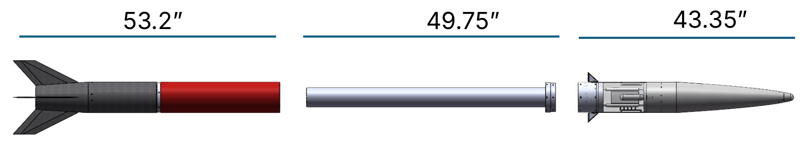
Flight profile
- Liftoff, T+0 s. 18:1 thrust to weight off the rail.
- Burnout, T+4.1 s. Peak velocity, about Mach 1.45. The vehicle coasts back down through transonic on the way to apogee.
- Apogee, T+33 s. About 20,000 ft AGL. The parachute deploys reefed.
- Disreef, T+224 s. At 1,000 ft AGL the parachute opens fully.
- Landing, T+280 s.
Top risks
| Risk | L | C | Score | Mitigation |
|---|---|---|---|---|
| Forward screws tear out of the fiberglass | 2 | 5 | 10 | More research on fiberglass shear strength, then bolt calcs |
| Epoxy softens from motor heat | 2 | 5 | 10 | High-temperature epoxy and heat transfer calcs |
| Fin can damage on landing | 4 | 2 | 8 | Mostly unavoidable; low touchdown speed helps |
| Motor case failure | 1 | 5 | 5 | Flying the manufacturer's own case |
What comes next
Between now and preliminary design review on 30 November, the open work is bolt calculations for the forward and rear retainers, FEA on every Dizzy-specific part, heat transfer calculations from the motor case into the joints, and mass optimization of the bulkhead and fin can centering ring. After PDR come the critical design review in December, subsystem testing of the canards, recovery, avionics, and igniter in January and February alongside manufacturing, assembly in February, and a launch targeted for 27 February 2027. This page will fill in with the analysis and then with flight data against the predictions above.
Contact
- noah.haeske@ufl.edu
- Phone
- 407-705-9895
- Resume
- Download PDF